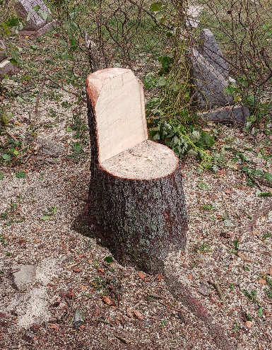
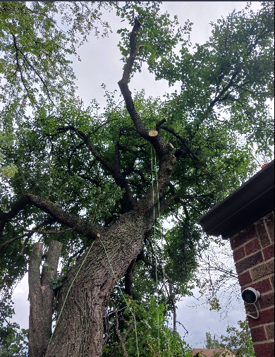
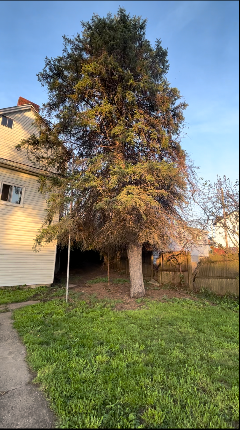
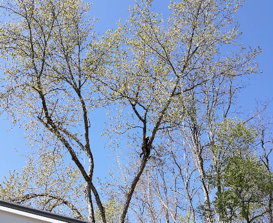
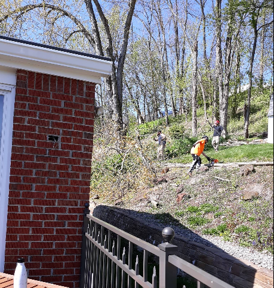
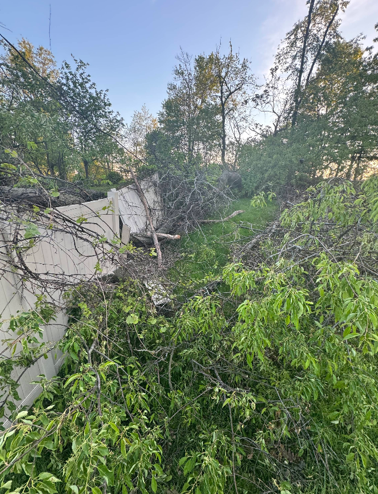

What Our Customers Say
Real reviews from real customers throughout the Pittsburgh area
Rose Marie Popovich
"M&S Tree Care did an amazing job on trees in our backyard. The one tree was huge, right beside our back deck and was really tall. The other was right beside our shed and was two trees together. My inquiry for a quote was responded to quickly - Nick came right when he said he would, gave me a quote right on the spot, provided evidence of insurance, kept me up-to-date on timing based on the weather, and completed the job timely... I was really impressed by the service and once they were gone, there was no evidence there was a tree or any of those logs in my yard. This truly was a pleasurable business arrangement, and the price was as good as the work. 5 Stars are well deserved."


Travis Ratica
"Nick and the guys were awesome!!! Great crew that works like a well oiled machine. We had numerous large trees in our yard that needed trimmed and 3 that needed removed completely. These guys came in and knocked it out in about 4 hours. They were all very communicative and kept me involved in the process, asking where and how I wanted things cut, very nice. All the guys were very polite and nice to talk to and they all did an amazing job. Truly transformed my entire yard. The best part of the entire thing was that they give us an old climbing line and tied it off on of the tree limbs for my kids to have a rope swing in the yard. Couldn't be happier. I've already talked to Nick about future tree projects which we will be doing in the fall. Highly recommend these guys, you wont be disappointed. UPDATE: Nick and the guys have now been to our house 3 times since this last review. Twice for removal and trimming and once for an emergency removal after a storm. I am 1000% satisfied every single time. This last time they dropped several really really massive trees that were overhanging power lines and made it look easy. The crew is great and these guys really know what they are doing. If you need any type of tree work done, call M&S. Best value of any home project I have done."


Ruslan Khatipov
"The entire process with M and S was smooth and professional. I received a very reasonable quote from the owner, Nick, for 2 trees that needed trimming. One was hanging over my roof, the other was starting to get too close to power lines. He was very knowledgeable and helpful, providing insightful info on the trees of my property. On the day of the action, Nick and his crew came by on time and worked swiftly. The crew was a well oiled machine, carefully removing branches around powerlines and a 2nd story roof. Within 2 hours, the crew was cleaning up after themselves, leaving the property cleaner than they found it. All of the small branches, twigs and leaves were broken down in a chipper and hauled off, while some of the thicker branch segments were cut up and left of the property. This is ideal as I will be able to burn it in the future. Overall, I was very happy with the service and I recommend anyone in the Pittsburgh area to call them up. Cheers!"

Donna Grilli
"We had M&S tree service out today to trim some trees back from the house and completely remove a few as well. I have nothing but great things to say about Nick and his crew. On time, very efficient and respectful and right on the mark with the estimate. I felt this job had some challenges since I live right next to a cemetery and the tombstones presented some concerns. The team was careful and all was good. Something I found funny, one of the workers asked if I wanted a particular pine cut to the ground, my husband told him jokingly, just high enough to sit on. Picture below of the tree! I'll sand it smooth and perfect place for a planter perhaps. I DEFINITELY use M&S Tree Service again"


Dave Gruska
"M & S did a great job with removing and trimming multiple trees on our property. Nick was super responsive with my questions about the estimate, and quickly resolved a very minor issue after the work was done. The crew worked fast and efficiently, and took great care not to harm my neighbor's vehicles that couldn't be moved. I had done some trimming myself, and still had large branches in my yard - the crew cut them up into small pieces, and cut an old stump to the ground without me even asking. We had two trees threatening our shed in the midst of other trees - they were able to remove those skillfully with a complex series of ropes. I would definitely use M & S again."

Kate James
"They are fast in responding, got us in when we needed and prices were, by far, the BEST around. Their team cleaned up and were amazing! Will definitely use if I need tree services again!"


Jackie V
"These guys are amazing. I called Nick the owner in a panic yesterday evening- I noticed my HUGE backyard pine tree was leaning toward the house. The crazy storm this week had pushed it, and you could see where the ground was starting to rise on one side of it. If this thing had fallen, it probably would have majorly damaged my house + the neighbor's. Even though they were swamped, they made time for me and came. It was in a tight spot but they had no problem getting it out of there. I cannot thank them enough! And the pricing was very fair. Will always recommend them in the future!"


Leslie Rudat
"M and S Tree Care did an outstanding job trimming branches from our neighbor's tree without needing to access their property. In addition, they removed two trees and five shrubs from our front yard and ground the stumps. They also trimmed the apple tree in our front yard. M and S was quick, reliable, thorough and they did an excellent job of cleaning up after their work. The cost to do all of this work was very reasonable. They have excellent insurance coverage and we would recommend them to everyone."



R2sojr Jr
"Nik and his crew were extremely efficient from receiving the quote to removing trees from the recent bad storm. Everything was completed as stated. You couldn't even tell they were there. A++ service and I would recommend any day of the week. Pictures are before and after."
